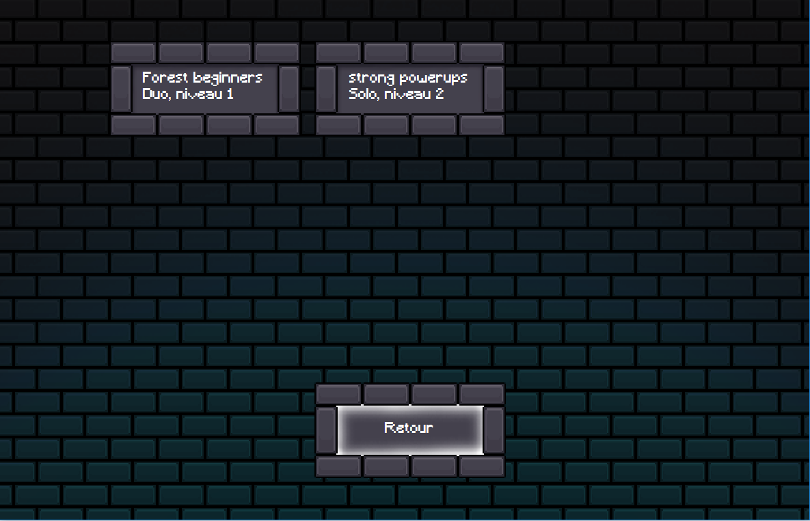
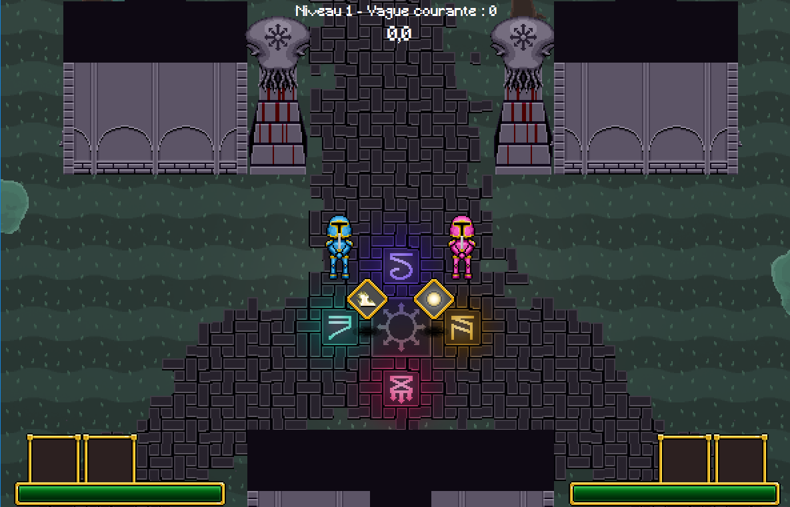
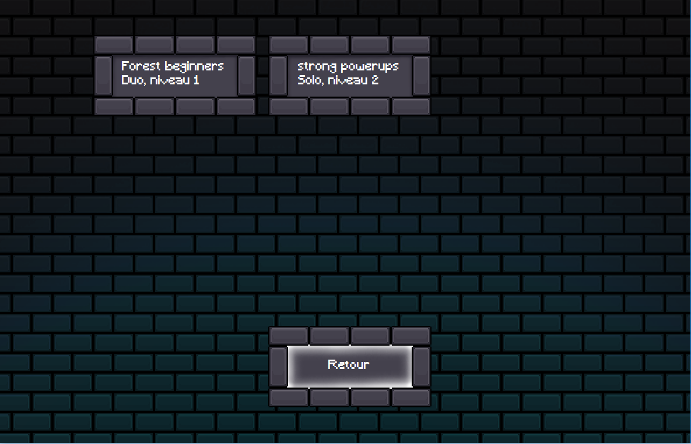
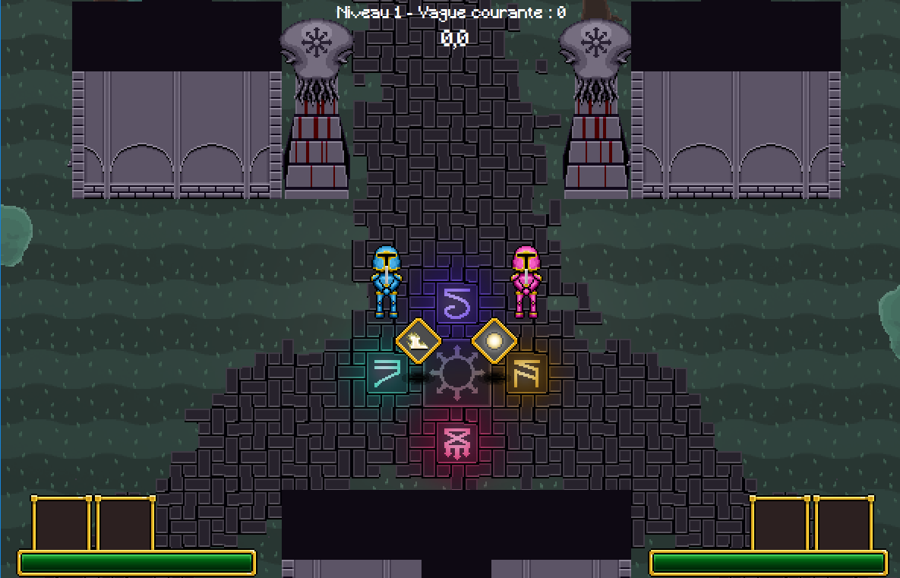

Mon portfolio
Cours C++
Dès fin avril, j'ai commencé à donner des cours de C++ disponibles en ligne à des camarades de classe (ayant déjà une expérience avec le C++). Ce cours vise à donner de meilleures bases pour les domaines auxquels on ne s'interesse pas forcément (comme la compilation), et de couvrir la plupart des aspects du langage.
Ecrire les cours me permet de gagner en rigueur en vérifiant que chaque information donnée n'est pas erronnée ou n'induise pas en erreur. Donner des cours m'améliore en pédagogie et en communication, pour pouvoir équilibrer la difficulté et la vitesse du cours selon les capacités des personnes, et pour garder l'attention de mon audience. C'est un projet très gourmand en temps mais qui me tient à coeur, qui se terminera le 5 juin.
Aggregates To Tuples
Il s'agit d'un projet personnel complété au début du mois d'avril. Il s'agit d' une librarie en C++17 permettant d'utiliser des structures comme des tuples : cela permet de trier, comparer, sérialiser ou encore obtenir le hash de structures automatiquement.
La librarie est cross-platform et est testée. En plus du code source de la librairie, j'ai un programme qui génère automatiquement du code, et un autre qui rassemble les différents fichiers pour simplifier l'utilisation de la librairie. J'ai également mis en place une chaîne d'intégration continue qui va, à chaque modification de la librairie en ligne, exécuter les programmes générateurs de code, compiler les tests puis les exéucter, puis indiquer si tout le processus s'est bien déroulé. Ces vérifications automatiques se déroulent sur Linux et Windows.
Ce projet récent m'a permis d'expérimenter des particularités techniques intéressantes en C++ et de gérer un environnement de développement avec des tests unitaires et une chaîne d'intégration continue. De plus, j'ai gagné beaucoup d'expérience en partageant cette librairie et en recevant les retours de personnes bienveillantes (sur Reddit et Slack).
Tentacle Slicers
Il y a un an, dans le cadre d'un projet libre lors de ma seconde année à Polytech', j'ai développé Tentacle Slicers en binôme, un jeu 2D vu de dessus jouable tout seul ou à deux (sur un même clavier) où il faut résister à des vagues d'ennemis. Des powerups permettent d'améliorer les statistiques des héros des joueurs et de développer de nouvelles compétences : projectiles puissants, utilisations en mouvement, invincibilité, sorts de contrôle, ... Une partie peut être sauvegardée, ce qui conserve l'état du jeu au début du dernier niveau.
Tentacle Slicers cumule plus de 8000 lignes de code/commentaire en C#. Il ne se base sur aucun moteur de jeu : j'ai donc notemment créé l'architecture du moteur, les collisions (formes 2d simples et lignes de vue, partitionnement du monde), le système d'animations, l'analyseur de fichier pour créer et recharger des niveaux, l'intelligence articifielle (avec pathfinding) et tous les assets graphiques du jeu (images, animations, effets, terrains).
Il s'agit d'un projet sur lequel j'ai passé beaucoup de temps et qui m'a appris beaucoup de choses. J'en suis assez satisfait (malgré quelques bugs restants) et il m'a donné goût aux problèmes d'organisation du code et aux moteurs de jeu. Voici le code source du jeu. GitHub n'a pas été utilisé pour son développement et ne sert ici qu'à héberger le projet final. Un Youtuber a accepté de tester notre jeu :)
 




cpp-sandbox
cpp-sandbox est le dépôt github où j'expérimente différents concepts en C++. Mon but est de créer des fonctionnalités et structures réutilisables, et si possible assez génériques. Cela me permet de développer mes compétences en C++, de proposer de meilleures interfaces, d'aquérir de bonnes habitudes, et d'avoir à terme une collection de code vérifié que je pourrai utiliser à nouveau.
Ce dépôt a longtemps été mis à jour. Tout son contenu est testé, ce qui peut servir de petite documentation. Il contient notamment des structures (certaines implémentant des algorithmes lock-free) et de la programmation fonctionnelle (monades et autres utilitaires pour des fonctions). Il s'agit du projet sur lequel je pense avoir appris le plus de choses (du moins pour la programmation).
Car Crash Boom !!! Yeah !
Au cours de conception de jeu vidéo de l'UQAC, nous étions quatre à avoir développé 'Car Crash Boom ! Yeah !!!', un jeu de course en multijoueur local développé sur Unity où deux équipes de deux joueurs s'affrontent (un pilote et un copilote). Un circuit alterne trois phases de combat et deux phases de coopération. Une phase de chaque type a pu être finalisée.
J'ai notamment développé un système d'inputs générique et créé une carte jouable (sur une plage) de combat. J'ai également recherché comment faire l'éclairage et la jonction entre les différentes scènes d'un circuit.


T-Arena
A mon arrivée au Québec, j'ai participé à une Game Jam où nous avons conçu à six 'T-Arena', un jeu 2D vu de dessus se jouant à deux au tour par tour, où deux équipes de héros s'affrontent sur un plateau composé de cases.
J'ai créé les sons du jeu, la boucle de jeu principale et la gestion des inputs, avec notamment un algorithme de sélection des PNJ et des cases où attaquer ou se déplacer (au clavier et à la manette).